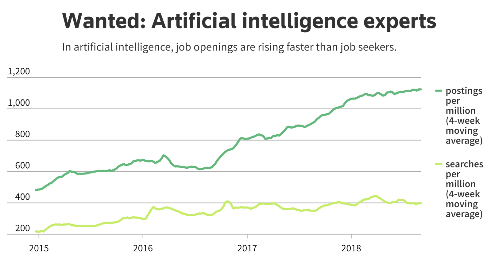

Now that nearly every company is considering how artificial intelligence (AI) applications can positively impact their businesses, they
are on the hunt for professionals to help them make their vision a reality. According to research done by Glassdoor, data scientists have
the No. 1 job in the United States. The survey looked at salary, job satisfaction and the number of job openings. If you have recent experience
looking for AI specialists to join your team, it’s quite clear that we’re facing an AI skills crisis. In order to move AI projects from
ideation into implementation, companies will need to determine how to close the AI skills gap so they have experts on their team to get the
job done.

Factors that contribute to the AI talent shortage.
One report suggested there about 300,000 AI professionals worldwide, but millions of
roles available. While these are speculative figures, the competitive salaries and benefits packages and the aggressive recruiting tactics rolled
out by firms to recruit AI talent would suggest the supply of AI talent is nowhere near matching up to the demand.
As the democratization of AI and deep learning applications expands—possible not just for tech giants but now viable for small- and medium-sized
businesses—the demand for AI professionals to do the work has ballooned as well. The C-suite and corporate management’s excitement for AI’s
various applications is building and then once they have bought into the concept (which is happening much more rapidly), they want to make it
real right away.
The 2018 “How Companies Are Putting AI to Work Through Deep Learning” survey from O’Reilly reveals the AI skills gap
is the largest barrier to AI adoption, although data challenges, company culture, hardware and other company resources are also impediments.
These results parallel a recent Ernst & Young poll that confirmed 56% of senior AI professionals believed the lack of qualified AI professionals
was the single biggest barrier to AI implementation across business operations. Another reason for the AI skills crisis is that our academic
and training programs just can’t keep up with the pace of innovation and new discoveries with AI. Not only do AI professionals need official
training, they need on-the-job experience. Therefore, there aren’t enough experienced AI professionals to step into the leadership roles required
by organizations who are just beginning to adopt AI strategies into their operations.
How to close the AI skills gap?
One of the ways to address the AI skills gap is to increase resources for digital, math
and technical education such as the UK Government announced in its 2017 Industrial Strategy whitepaper. While skills acquisition for younger
generations will help in the future, a singular focus on just driving more students into computer science will not solve the issue—the number
of computer science graduates in the UK would need to increase 10X to meet the demand.
Many of the tech giants such as Google and Amazon are investing internationally to expand their talent pool. Google Brain Toronto is a facility
dedicated to AI and Amazon has an AI-focused lab near the University of Cambridge in England and plans to build a similar facility in Barcelona.
Until there are new graduates to step into AI roles, many companies can focus now on retraining and upskilling current employees. According to
a Forbes survey, 63% of companies are now providing in-house data analytics training. The future of work will require employees to be agile and
change their skills over time.
It’s challenging to find a person who has the appropriate hard skills and technical know-how as well as the soft skills such as being
“highly collaborative” that would make them successful in a high-level AI position that can take their tech skills and apply them to business
problems. Recent grads typically don’t have the business acumen and leadership experience that is required to manage AI implementation throughout
an organization. As AI matures in organizations, it will be imperative that diverse personnel and thinking is integrated.
Some AI positions could be filled by those with mathematics or physics degree who get trained on AI specialties. Deeplearning.ai, launched
in collaboration with Coursera, is hoping to bring AI to a mass audience and help people build their careers in AI.
Could the solution for the AI skills gap be solved by AI? Possibly. Google is developing AutoML, AI that can actually create other AI systems.
If this initiative is successful it could be very powerful for mid-sized businesses that are unable to compete with tech giants for top-tier talent.
Technology has a long history of embracing collaboration across borders and gaining advantage from insights allowed due to using open-source
software. Another way to improve the AI skills crisis is to tap into this decentralized network of data professionals.
There’s clearly not one way to solve the AI skills crisis. It will require a multipronged approach over a period of time and the approach
will evolve over time. While there is no easy solution, all companies who plan to use AI today or in the future must consider how they will
attack the AI talent gap.